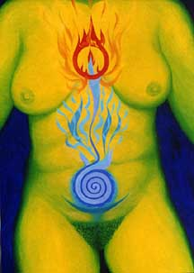

|
 Copyright 2000 Max Dashu |
womb healing the chalice returns
|
Tantric invocation of the Goddess abiding inthe first chakra:
Within in reigns Paraa, the Awakener of eternal
knowledge
She is the omnipotent Kalaa who is wonderfully skillful
to create, and is subtler than the subtlest.
She is the receptacle of the continuous stream of ambrosia
which flows from the eternal bliss.
By her radiance it is that the whole of this universe
and this cauldron is illumined.
--Mahanirvana Tantra
Womb Healing focuses on the second chakra,
described as a six-petalled lotus in which
a half moon rests like the autumnal moon:
It is here that Rakini always shines.
Her radiant beauty equals the center of the blue lotus.
The beauty of her body is enhanced by
her uplifted arms holding various weapons.
She is dressed in celestial raiment and ornaments,
and her mind is exalted with the drinking of ambrosia.
And tthe fourth chakra, called Anahata,
the Unstruck Sound,
where the blissful form of Goddess manifests
"and is experienced by the inward-turned mind of the blessed ones,
whose hair stands on end and whose eyes weep for joy."
The Shakti whose tender body is like
ten million flashes of lightning
is in the center of this lotus as a triangle.
(Inside the triangle is the Yoni (origin/ vulva)
like shining gold and on it an orifice
as tiny as that in a gem -- the Bindu --
the resplendent abode of Lakshmi.
This heart lotus is beautified by the Hamsa,
which is like the steady tapering flame
of a lamp in a windless place.